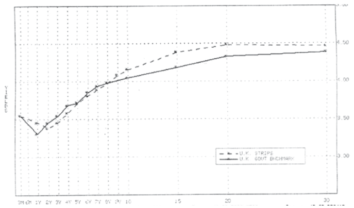
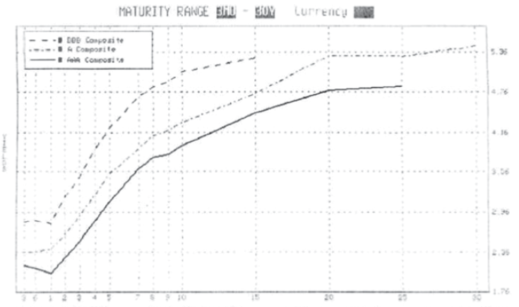
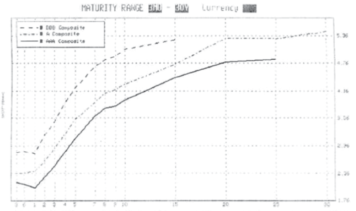
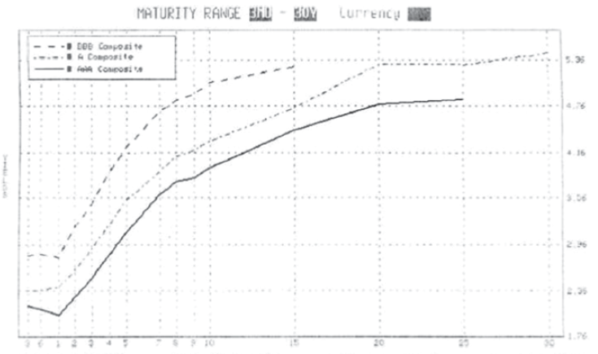

Interest Rates Overview
Understanding Spot, Forward, and Swap Rates
| Sam Thawley Managing Director, Head of Research sam.thawley@SGJI.com |
Tony Tanaka Director, Head of NBFI tony.tanaka@SGJI.com |
Julie Liu Associate, Credit Research julie.liu@SGJI.com |
Yield Curves
- Plot of yields on like-for-like bonds differing in tenor
- Investors need a basis to navigate and compare issues in the same class and between classes
- Key indicator of debt capital market conditions. Analysis and pricing resolves around yield curve
- Important implications across asset classes, signaling liquidity and macro conditions
- Contains valuable information about future expectations that can be extracted
- Theoretically, a yield curve can be constructed for any yielding securities grouped in the same class
- Use <IYC> and <FMC> in Bloomberg to list key curves


 


Yield to maturity
- Yield to maturity is most commonly used to summarize a bond's pricing
- Single rate equating all discounted cash streams to market price; simple and useful measure
| Name | Coupon | Price | Yield |
|---|---|---|---|
| GB3:GOV | 0.00 | 4.39 | 4.51% |
| GB6:GOV | 0.00 | 4.29 | 4.44% |
| GB12:GOV | 0.00 | 4.12 | 4.30% |
| GT2:GOV | 4.13 | 99.72 | 4.27% |
| GT5:GOV | 4.13 | 99.41 | 4.26% |
| GT10:GOV | 4.25 | 98.84 | 4.39% |
- ...but can be misleading and poor measure of relative value and realized return
- Is a dollar-duration-weighted average of spot rates relevant to the bond's tenor
- Does not distinguish between payment patterns and term structure (coupon effect), so cash flows are not discounted at appropriate rates
- Cash flows must be reinvested at ytm to realize ytm (reinvestment risk), so ytm curve is hypothetical
Spot Rates
- Rate on a zero loan; more
pure
than ytm - Free from coupon effect and reinvestment risk
- Can be derived from coupon bonds or ytm curve
True
term structure. Appropriate for discounting cash flows and relative value analysis
$$
P(B) = \sum_{t=1}^T\frac{c}{(1+\mathbf{s_t})^t} + \frac{F}{(1+\mathbf{s_T})^T}
$$
- Spot curve is constructed using coupon bonds in the class spanning a range of tenors
- Bootstrap is a recursive process to build out the curve from the short-end one tenor at a time
- XYZ has a 1y 5% bond trading at par, a 2y 6% at 101
- $s_1 = 5\%$, $s_2 = 5.47\%$ by $101 = \frac{6}{1+5\%} + \frac{106}{(1+s_2)^2}$
- Now if 3y 8% at 106, we get $s_3 = 5.80\%$ using $106 = \frac{8}{1 + 5.0\%} + \frac{8}{(1 + 5.47\%)^2} + \frac{108}{(1+s_3)^3}$
| Tenor | Coupon | Price | Spot rate |
|---|---|---|---|
| 1 | 5% | 100.0 | 5.00% |
| 2 | 6% | 101.0 | 5.47% |
| 3 | 8% | 106.0 | 5.80% |
| 4 | 8% | 106.5 | 6.19% |
| 5 | 4% | 90.0 | 6.45% |
| 6 | 0% | 68.0 | 6.64% |
Term Structure Drivers
- Three key factors on a yield curve shape are
- Expected rate changes
- Term premia
- Convexity premia
- Decomposition and analysis can help:
- Estimate curve's steepness/flatness reflects views of rising/stable rates and/or term premia
- Compare with subjective forecasts to trade
- Identify rich/cheap tenors and attractive positions
- Identify sources and risks of duration extension returns
- Extract market implied trajectory of central bank policy
- Price complex future cash flows
Forward Rates
- Forward is the rate between any two periods; it can be locked in by long/short today's zeros
- Most fundamental building block in yield curve
- Spot rates can decompose into one-year forwards
- A given spot curve implies a specific forward curve
- Spot is a geometric average of forwards
- Forwards magnify variations in spot curve slope
$ (1+s_1)\cdot(1+f_{1,2}) = (1+s_2)^2 $
$ (1+s_1)\cdot(1+f_{1,2})\cdot(1+f_{2,3}) = (1+s_3)^3 $
$ (1+s_2)^2 \cdot(1+f_{2,3}) = (1+s_3)^3 $
$ (1+f_{m,n})^{n-m} = \frac{(1+s_n)^n}{(1+s_m)^m} $
- Forwards give the break-even rates such that all bonds across tenors yield the same rate today
- If spots slope up, longer bonds have +carry, so long rates must rise to cause losses to equate returns
- If spots slope down, longer bonds have -carry, so long rates must fall to cause gains to equate returns
- If curve concave, 2-5 flattener (sell 2s, buy 5s & 0s) has -carry, so curve must flatten to equate returns
- If curve concave, 2-4 steepener (buy 2s, sell 4s & 0s) has +carry, so curve must flatten to equate returns
- If $s_1 = 6\%$ and $s_2 = 7\%$, $f_{1,2} = 8\%$, so buy 2s at $87.34$ now and sell at $92.58 (100/1.08)$ returns $6\%$
- 2s has to rise by 1% and constant-maturity $s_1$ by 2% to equate returns. The 1% difference is called roll
| A Spot (today) | B 1y forward | C Implied spot in 1y | D (C-A) Implied Δ spot in 1y | E Implied spot in 2y | F (E-A) Implied Δspot in 2y |
|---|---|---|---|---|---|
| $s_1$ 6.00 | $f_{0,1}$ 6.00 | $f_{1,2}$ 8.01 | 2.01 | $f_{2,3}$ 9.27 | 3.27 |
| $s_2$ 7.00 | $f_{1,2}$ 8.01 | $f_{1,3}$ 8.64 | 1.64 | $f_{2,4}$ 9.64 | 2.64 |
| $s_3$ 7.75 | $f_{2,3}$ 9.27 | $f_{1,4}$ 9.09 | 1.34 | $f_{2,5}$ 9.90 | 2.15 |
| $s_4$ 8.31 | $f_{3,4}$ 10.01 | $f_{1,5}$ 9.42 | 1.11 | $f_{2,6}$ 10.09 | 1.78 |
| $s_5$ 8.73 | $f_{4,5}$ 10.43 | $f_{1,6}$ 9.67 | 0.94 | $f_{2,7}$ 10.22 | 1.49 |
| $s_6$ 9.05 | $f_{5,6}$ 10.66 | $f_{1,7}$ 9.85 | 0.8 | $f_{2,8}$ 10.31 | 1.26 |
| $s_7$ 9.29 | $f_{6,7}$ 10.74 | $f_{1,8}$ 9.97 | 0.68 | $f_{2,9}$ 10.35 | 1.06 |
| $s_8$ 9.47 | $f_{7,8}$ 10.74 | $f_{1,9}$ 10.06 | 0.59 | $f_{2,10}$ 10.39 | 0.92 |
| $s_9$ 9.60 | $f_{8,9}$ 10.65 | $f_{1,10}$ 10.12 | 0.52 | ||
| $s_10$ 9.70 | $f_{9,10}$ 10.60 |
- I buy 3s funded by 1s, carry is $s_3 - s_1 = 1.75\% $
- Bullish position, +PL and -PL from rate fall and rise
- $f_{1,3} - s_3$ shows my 3s yield buffer
- If curve unchanged, $s_3$ rolls down to $s_2$ giving +PL
- Added together, it answers how much $s_2$ must change in 1y to equate 1s and 3s returns
- $(f_{1,3} - s_3) + (s_3 - s_2) = f_{1,3} - s_2$
- If I forecast the $s_2$ next year won't rise above today's $s_3$, I profit from both the view and roll